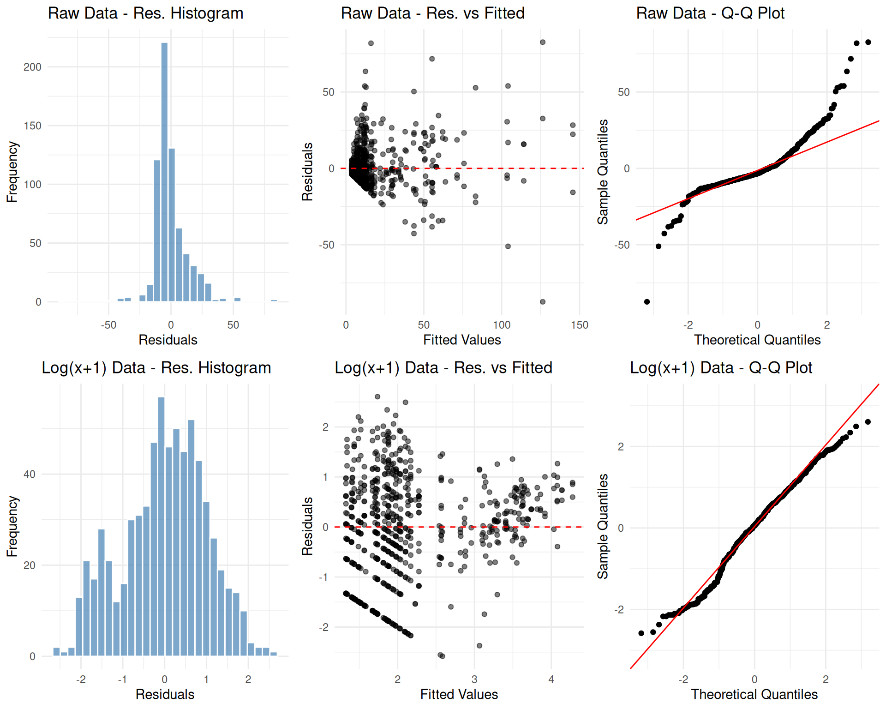

Code
# 1. Fit Models
# A) Raw Data
model_raw <- lmer(heterospecific_pollen ~ 1 + (1 | year_fac / plant_id), data = model_data)
# B) Log-Transformed Data
model_log <- lmer(log1p(heterospecific_pollen) ~ 1 + (1 | year_fac / plant_id), data = model_data)
# 2. Helper function to create diagnostic plots
create_diag_plots <- function(model, title_prefix) {
# Extract plotting data
diag_df <- data.frame(
Fitted = fitted(model),
Residuals = resid(model)
)
# 1. Histogram of Residuals
p1 <- ggplot(diag_df, aes(x = Residuals)) +
geom_histogram(bins = 30, fill = "steelblue", color = "white", alpha = 0.7) +
labs(title = paste(title_prefix, "- Res. Histogram"), x = "Residuals", y = "Frequency") +
theme_minimal()
# 2. Residuals vs Fitted
p2 <- ggplot(diag_df, aes(x = Fitted, y = Residuals)) +
geom_point(alpha = 0.5) +
geom_hline(yintercept = 0, color = "red", linetype = "dashed") +
labs(title = paste(title_prefix, "- Res. vs Fitted"), x = "Fitted Values", y = "Residuals") +
theme_minimal()
# 3. Q-Q Plot
p3 <- ggplot(diag_df, aes(sample = Residuals)) +
stat_qq() +
stat_qq_line(color = "red") +
labs(title = paste(title_prefix, "- Q-Q Plot"), x = "Theoretical Quantiles", y = "Sample Quantiles") +
theme_minimal()
return(list(p1, p2, p3))
}
# Generate plots
plots_raw <- create_diag_plots(model_raw, "Raw Data")
plots_log <- create_diag_plots(model_log, "Log(x+1) Data")
# Combine into a grid (2 rows: Raw top, Log bottom)
# Layout:
# Raw Hist | Raw Res-Fit | Raw QQ
# Log Hist | Log Res-Fit | Log QQ
# Wait, user asked for 2x2 per model? "For both models ... create a 2x2 diagnostic plot... Display these plots side-by-side"
# Let's do a 2x3 grid: Rows = Models, Cols = Plots.
grid.arrange(
plots_raw[[1]], plots_raw[[2]], plots_raw[[3]],
plots_log[[1]], plots_log[[2]], plots_log[[3]],
nrow = 2
)